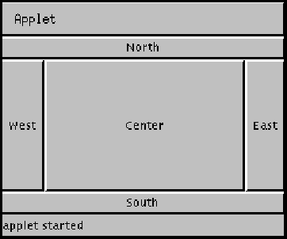

java.lang.Object | +----java.awt.BorderLayout
public class BorderLayout
extends Object
implements LayoutManager2, Serializable
A border layout lays out a container, arranging and resizing its components to fit in five regions: North, South, East, West, and Center. When adding a component to a container with a border layout, use one of these five names, for example:
Panel p = new Panel();
p.setLayout(new BorderLayout());
p.add(new Button("Okay"), "South");
As a convenience, BorderLayout interprets the absence of a string
specification the same as "Center":
Panel p2 = new Panel();
p2.setLayout(new BorderLayout());
p2.add(new TextArea()); // Same as p.add(new TextArea(), "Center");
The components are laid out according to their preferred sizes and the constraints of the container's size. The North and South components may be stretched horizontally; the East and West components may be stretched vertically; the Center component may stretch both horizontally and vertically to fill any space left over.
Here is an example of five buttons in an applet laid out using the BorderLayout layout manager:

The code for this applet is as follows:
import java.awt.*;
import java.applet.Applet;
public class buttonDir extends Applet {
public void init() {
setLayout(new BorderLayout());
add("North", new Button("North"));
add("South", new Button("South"));
add("East", new Button("East"));
add("West", new Button("West"));
add("Center", new Button("Center"));
}
}